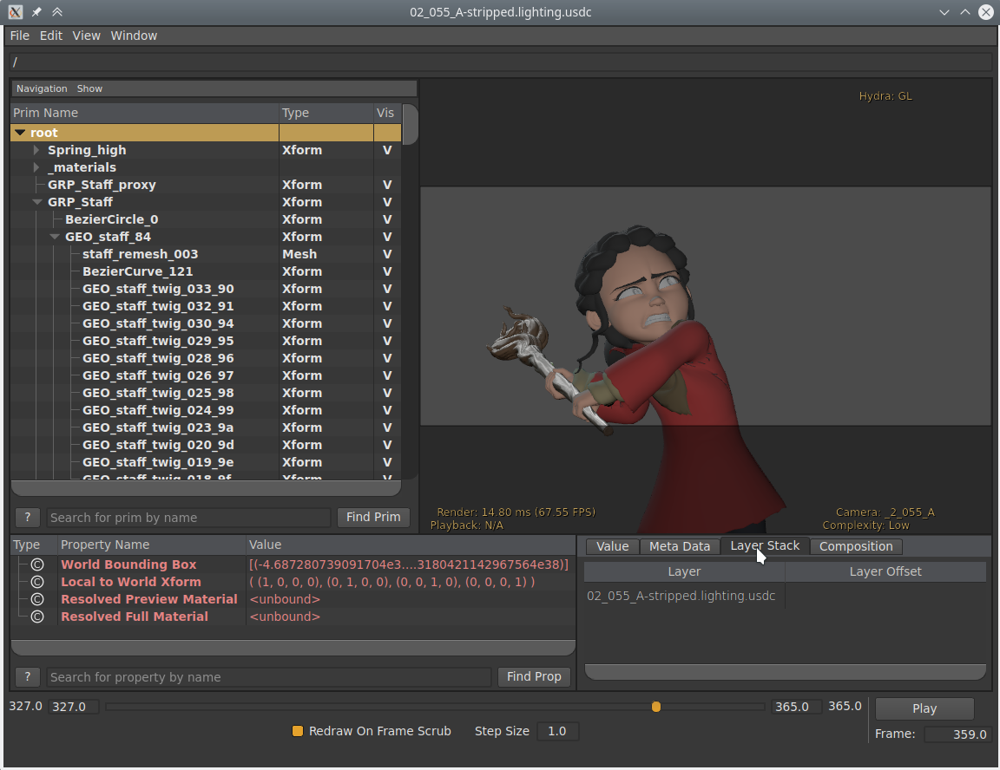

Universal Scene Description¶
Import File USD¶
File USD thường biểu diễn scene dưới dạng một hệ thống phân cấp các primitive, hay prim. Từng prim riêng lẻ chứa dữ liệu mô tả các thực thể của scene, chẳng hạn geometry, light, camera và hệ thống phân cấp transform. Bộ import USD của Blender chuyển các prim USD thành hệ thống phân cấp các object Blender. Giống như bộ export USD, bộ import chưa xử lý một số khái niệm composition của USD, chẳng hạn layer và reference.
Các loại dữ liệu USD sau đây có thể được import thành object Blender:
Cameras
Curves
Lights
Materials
Meshes
Point Clouds
Hình khối Nguyên thủy
Volumes
Để biết thêm thông tin về cách các loại dữ liệu được xử lý, xem các mô tả về Tùy chọn Import bên dưới.
Ghi chú
Khi import một USDZ archive, điều quan trọng là cân nhắc kỹ tùy chọn Import Textures để quyết định có copy các file texture khỏi file nén zip hay không, và copy theo cách nào.
Primitive Xform và Scope¶
USD cung cấp kiểu prim Xform, chứa dữ liệu transform, có thể dùng để biểu diễn hệ thống phân cấp transform và tổ chức scene. Các prim Xform như vậy được import thành các empty object Blender.
USD cũng hỗ trợ primitive Scope, là những thực thể không chứa dữ liệu transform, nhưng có vai trò nhóm các phần tử khác của scene. Blender không có khái niệm tương đương chính xác với scope, nên các primitive này được import thành các empty Blender đặt tại gốc tọa độ. Đây là một cách biểu diễn chưa hoàn hảo, vì empty object có transform còn Scopes thì không, nhưng cách tiếp cận này vẫn giúp giữ được cấu trúc phân cấp của scene.
Primitive PointInstancer¶
USD cung cấp kiểu prim UsdGeomPointInstancer, chứa các instance được rải trên các điểm của một primitive.
Chúng được import vào Blender dưới dạng Point Cloud bằng một Geometry Nodes Modifier và Instance on Points Node.
Animation¶
Bộ import hỗ trợ hai loại animation:
Transform động: Nếu một primitive USD có dữ liệu transform biến đổi theo thời gian, một constraint Transform Cache sẽ được thêm vào object Blender đã import.
Geometry động: Geometry động của mesh, curve và point cloud được hỗ trợ bằng cách thêm modifier Mesh Sequence Cache vào dữ liệu đã import. Animation của thuộc tính geometry (USD Primvar) được hỗ trợ cho mọi loại dữ liệu có loại tương đương trong Blender. Điều này bao gồm màu sắc, UV, velocity và các dữ liệu thuộc tính chung khác. Lưu ý rằng các chuỗi file USD (tức là mỗi frame một file riêng) không được hỗ trợ.
Materials¶
Nếu một mesh hoặc geometry subset USD có material được liên kết, bộ import sẽ gán cho object Blender một material cùng tên với material USD. Nếu một material Blender cùng tên đã tồn tại trong scene, material sẵn có đó có thể được dùng, tùy vào tùy chọn Material Name Collision. Nếu không, một material mới sẽ được tạo.
Nếu material USD có nguồn shader USD Preview Surface, màu, metallic và roughness của Viewport Display sẽ được đặt theo các giá trị đầu vào tương ứng của USD Preview Surface.
Còn có tùy chọn Import USD Preview để chuyển các shader USD Preview Surface thành các node shader Principled BSDF của Blender. Tùy chọn này có thể gây mất thông tin, vì nó chưa xử lý được việc chuyển đổi mọi cài đặt và loại shader, nhưng có thể tạo ra sự hiển thị gần đúng của các material.
Định hướng Hệ tọa độ¶
Nếu USD được import theo trục Y hướng lên, một phép quay sẽ tự động được áp dụng cho các object gốc để chuyển sang định hướng trục Z hướng lên của Blender.
Tùy chọn Import¶
Các tùy chọn sau đây khả dụng khi import từ USD:
General¶
- Path Mask
Chỉ import phần con của scene USD có gốc tại primitive đã cho.
- Include
- Visible Primitives Only
Không import các primitive USD vô hình. Chỉ áp dụng cho các primitive có thuộc tính visibility không được animate. Các primitive có visibility được animate sẽ luôn được import.
- Defined Primitives Only
Khi tắt, điều này cho phép import các primitive USD chưa được định nghĩa, chẳng hạn những primitive có specifier override.
- Set Frame Range
Cập nhật frame bắt đầu và frame kết thúc của scene cho khớp với của USD stage.
- Create Collection
Thêm tất cả các object đã import vào một collection mới.
- Relative Path
Chọn file tương đối so với blend-file.
- Apply Unit Conversion Scale
Scale các object của scene theo giá trị
metersPerUnitcủa USD Stage. Phép scale này được áp dụng cộng thêm vào giá trị chỉ định trong tùy chọn Scale.- Scale
Giá trị dùng để scale các object được nhập so với gốc của world.
- Light Intensity Scale
Tỷ lệ cho cường độ của các light được import.
- Custom Properties
Hành vi khi import các thuộc tính USD thành Custom Properties.
- None:
Không import các thuộc tính tùy chỉnh USD.
- User:
Import các thuộc tính USD trong namespace
userPropertiesthành custom property. Namespace sẽ bị loại bỏ khỏi tên thuộc tính.- All Custom:
Import mọi thuộc tính tùy chỉnh USD thành custom property. Namespace sẽ được giữ lại trong tên thuộc tính.
Object Types¶
- Cameras
Import primitive
UsdGeomCamerathành Camera Object.Các thuộc tính camera được hỗ trợ bao gồm:
Kiểu chiếu (phối cảnh và trực giao)
Tiêu cự (focal length).
Khoảng cách depth of field.
F-stop (aperture).
Điểm bắt đầu và kết thúc clipping.
Sensor shift (độ nghiêng) X và Y.
Kích thước sensor (chiều rộng và chiều cao aperture).
Ghi chú
Hầu hết các thuộc tính đều hỗ trợ animation. Tuy nhiên, việc import kích thước aperture bị giới hạn do khác biệt giữa USD và Blender trong cách diễn giải kích thước sensor. Khi kích thước aperture được animate, các giá trị shift tương ứng cũng được animate để giữ tính nhất quán.
- Curves
Import primitive
UsdGeomBasisCurvesthành Curve vàUsdGeomNurbsCurvesthành mesh Blender.- Lights
Import light thành Light Object. Hiện chưa bao gồm cylinder light hay geometry light.
- World Dome Light
Chuyển dome light
UsdLuxDomeLighthoặcUsdLuxDomeLight_1đầu tiên được tìm thấy thành shader background của world.- Materials
Import material UsdPreviewSurface.
- Meshes
Import primitive
UsdGeomMeshthành Mesh Object.- Volumes
Import tài sản OpenVDB
UsdVolVolumethành Volume Object.- Point Clouds
Import primitive
UsdGeomPointsthành Point Cloud Object.- USD Shapes
Import các hình khối primitive USD thành mesh Blender. Hỗ trợ
UsdGeomCapsule,UsdGeomCapsule_1,UsdGeomCone,UsdGeomCube,UsdGeomCylinder,UsdGeomCylinder_1,UsdGeomPlanevàUsdGeomSphere.- Display Purpose
- Render
Bao gồm các primitive có purpose
render.- Proxy
Bao gồm các primitive có purpose
proxy.- Guide
Bao gồm các primitive có purpose
guide.
- Material Purpose
Cố gắng import material với purpose đã cho. Nếu không có material nào với purpose này được liên kết với primitive, thì hành vi dự phòng (nếu có) được ghi chú bên dưới.
- All Purpose:
Cố gắng import material
allPurpose.- Preview:
Cố gắng import material
preview. Tải materialallPurposelàm phương án dự phòng.- Full:
Cố gắng import material
full. Tải materialallPurposehoặcpreview, theo thứ tự đó, làm phương án "dự phòng".
Geometry¶
- UV Coordinates
Đọc tọa độ UV của mesh.
- Color Attributes
Chuyển các giá trị
displayColorcủa mesh USD thành Color Attribute của Blender.- Mesh Attributes
Đọc
PrimvarsUSD thành thuộc tính của mesh.- Subdivision
Tạo modifier Subdivision Surface dựa trên thuộc tính
SubdivisionSchemecủa USD.- Validate Meshes
Kiểm tra mesh được nhập có dữ liệu hỏng và sửa nếu cần. Khi tắt, dữ liệu sai có thể gây crash khi hiển thị hoặc chỉnh sửa mesh. Tùy chọn này khiến việc nhập chậm hơn nhưng được khuyến nghị, vì lỗi dữ liệu không phải lúc nào cũng rõ ràng.
- Merge parent Xform
Cho phép các primitive USD hợp nhất với cha Xform của chúng nếu chúng là con duy nhất trong phân cấp.
Rigging¶
- Shape Keys
Import blend shape USD thành Shape Keys của Blender.
- Armatures
Import skeleton USD thành Armatures của Blender.
Materials¶
- Import All Materials
Đồng thời import cả những material không được geometry nào sử dụng. Lưu ý, khi tùy chọn này tắt, các material được geometry tham chiếu vẫn sẽ được import.
- Import USD Preview
Chuyển shader USD Preview Surface thành mạng shader Principled BSDF.
- Set Material Blend
Nếu tùy chọn Import USD Preview được bật, phương pháp blend của material sẽ tự động được đặt dựa trên các đầu vào shader
opacityvàopacityThreshold, cho phép hiển thị các object trong suốt.
- Material Name Collision
Hành vi khi tên của material nhập vào xung đột với material đã tồn tại.
- Make Unique:
Import từng material USD thành một material Blender riêng biệt.
- Reference Existing:
Nếu material trùng tên đã tồn tại thì tham chiếu tới material đó thay vì nhập mới.
Textures¶
Khi import một gói USDZ, các tùy chọn sau đây quy định có hay không và theo cách nào các tài nguyên texture phụ thuộc của USD được copy khỏi file nén zip để có thể tải vào Blender.
- Import Textures
Hành vi khi import texture từ một USDZ archive.
- None:
Không import texture. Lưu ý rằng với tùy chọn này, texture của material có thể không được phân giải trong Blender.
- Packed:
Import texture dưới dạng dữ liệu được pack trong file Blender.
- Copy:
Copy các file sang thư mục chỉ định trong tùy chọn Textures Directory.
- Textures Directory
Đường dẫn tới thư mục nơi các texture đã import sẽ được copy vào, khi chế độ Import Textures là Copy.
Lưu ý rằng thư mục texture mặc định là đường dẫn tương đối
//textures, vốn yêu cầu file Blender phải được lưu trước khi import, để đường dẫn tương đối có thể được phân giải.- File Name Collision
Hành vi khi tên của một file texture được import xung đột với file sẵn có.
- Use Existing:
Nếu một file cùng tên đã tồn tại, hãy dùng file đó thay vì copy.
- Overwrite:
Ghi đè lên các file sẵn có.
Particle và Instancing¶
- Scene Instancing
Import các instance trong scene graph USD thành collection instance, nếu không chúng sẽ được import thành các bản copy.
Xuất sang File USD¶
File Universal Scene Description (USD) có thể chứa lớp (layer), ghi đè (override) phức tạp và tham chiếu tới các file khác. Bộ USD Exporter của Blender tiếp cận theo cách đơn giản hơn nhiều. Khi export, mọi object hiển thị và được hỗ trợ trong scene đều được export, tùy chọn giới hạn theo trạng thái chọn. Blender (chưa) hỗ trợ export object vô hình, USD layer, variant, v.v.
Các object sau đây có thể được export sang USD:
Mesh (các loại khác nhau, xem bên dưới).
Camera (hiện chỉ có camera phối cảnh, chưa có camera trực giao).
Curves
Text (được export thành mesh).
Lights
Hair (được export thành curve, và giới hạn ở các sợi cha).
Point Clouds
Metaball (được export thành mesh động).
Volumes
Armatures
Khi export một animation, mesh đã được đánh giá cuối cùng sẽ được ghi ra USD. Điều này có nghĩa là các loại mesh sau đây có thể được export:
Mesh tĩnh.
Mesh biến dạng; ở đây topology của mesh không đổi, nhưng vị trí các vertex thay đổi theo thời gian. Ví dụ là nhân vật được animate hoặc object nảy lên (nhưng không nứt vỡ).
Mesh animate tùy ý; ở đây topology có thay đổi. Ví dụ là kết quả của một mô phỏng fluid, nơi các giọt chất lỏng bắn ra có thể tách khỏi khối chính.
Ghi chú
Để export scene Blender thành USDZ archive, hãy đặt phần mở rộng của file xuất ra thành .usdz. Gói USDZ xuất ra sẽ là một file nén zip chứa USD cùng các file texture phụ thuộc của nó.

Cảnh quay từ Spring được export sang USD và mở trong USDView.¶
Tùy chọn Xuất¶
Các tùy chọn sau đây khả dụng khi export sang USD:
General¶
- Root Prim
Nếu được đặt, thêm một primitive transform với đường dẫn đã cho vào stage để làm cha của toàn bộ dữ liệu được export.
- Include
- Selection Only
Khi đánh dấu, chỉ các object được chọn mới được export. Các object instanced, ví dụ các collection được instance trong scene, được coi là 'được chọn' khi instancer của chúng được chọn.
- Animation
Khi đánh dấu, toàn bộ dải frame của scene được export. Khi bỏ đánh dấu, chỉ frame hiện tại của scene được export.
- Incremental Save Animation
Lưu tăng dần sau số frame chỉ định để giảm mức dùng bộ nhớ đỉnh. Lưu tăng dần có thể làm thời gian export lâu hơn và tiềm ẩn vấn đề với một số dịch vụ đồng bộ file. Giá trị 0 sẽ tắt lưu tăng dần.
- Blender Data
- Custom Properties
Export Custom Properties thành thuộc tính USD. Thuộc tính Namespace được dùng để xác định namespace mà các thuộc tính được ghi vào.
- Namespace
Nếu được đặt, thêm namespace đã cho làm tiền tố cho tên các custom property được export. Điều này chỉ áp dụng cho tên thuộc tính chưa có tiền tố (ví dụ, nó áp dụng cho tên
barnhưng không áp dụng chofoo:bar), và không áp dụng cho tên object cùng tên dữ liệu Blender — vốn luôn được export trong namespaceuserProperties:blender.Theo mặc định, namespace
userPropertiesđược sử dụng.- Blender Names
Tạo các thuộc tính tùy chỉnh USD chứa tên object Blender và tên dữ liệu object gốc.
- Allow Unicode
Giữ các ký tự mã hóa UTF-8 khi ghi tên prim và thuộc tính USD (yêu cầu phần mềm dùng USD 24.03 trở lên khi mở các file thu được).
- File References
- Relative Paths
Dùng đường dẫn tương đối để tham chiếu các file bên ngoài (tức là texture, volume) trong file USD được export, nếu không thì dùng đường dẫn tuyệt đối.
- Convert Orientation
Chuyển trục định hướng sang quy ước khác để khớp với các ứng dụng khác. Blender dùng Y Forward, Z Up (vì front view nhìn theo hướng +Y). Ví dụ, các ứng dụng thường dùng Y làm trục lên; trong trường hợp đó cần -Z Forward, Y Up.
- Forward / Up Axis
Bằng cách ánh xạ chúng sang các trục khác nhau, bạn có thể chuyển đổi phép quay giữa các trục lên và trục phía trước mặc định của các ứng dụng.
- Units
Đặt metadata
metersPerUnitcủa USD Stage theo đơn vị đo được chọn.- Meters Per Unit
Giá trị dùng cho
metersPerUnitnếu đơn vị Custom được chọn.
- Xform Ops
Kiểu toán tử transform dùng để biến đổi prim.
- Translate, Rotate, Scale:
Export với các toán tử
Xformtranslate, rotate và scale.- Translate, Orient, Scale:
Export với các toán tử
Xformtranslate, quaternion orient và scale.- Matrix:
Export toán tử matrix.
- Use Settings for
Xác định dùng độ hiển thị Viewport hay Render của object, cài đặt modifier và các thuộc tính tương tự khác trong lúc export.
Object Types¶
- Meshes
Export Mesh Object
- Lights
Export Light Object.
UsdLuxShapingAPIđược dùng để hỗ trợ spot light.- World Dome Light
Chuyển material của world thành
UsdLuxDomeLight. Hiện chỉ hoạt động với các material đơn giản, gồm một environment texture nối vào background shader, kèm tùy chọn nhân vector với màu texture.- Cameras
Export Camera Object. Chỉ camera phối cảnh mới được export.
- Curves
Export Curve Object
- Point Clouds
Export Point Cloud Object
- Volumes
Export Volume Object
- Hair
Các sợi hair cha được export thành một hệ curve. Màu của sợi hair không được export.
Ghi chú
Kiểu schema USD tương ứng dùng khi Export cũng giống như kiểu được đọc khi Import. Xem phần Import để biết chi tiết.
Geometry¶
- UV Maps
Khi đánh dấu, bao gồm tọa độ UV cho các mesh được export. Tên UV map trong USD giống với tên trong Blender.
- Rename UV Maps
Export UV map với tên mặc định của USD (
st) thay cho tên mặc định của Blender (UVMap).- Normals
Khi đánh dấu, bao gồm normals cho các mesh được export. Điều này gồm cả custom loop normals.
- Merge parent Xform
Hợp nhất các primitive USD với cha Xform của chúng nếu có thể. USD không cho phép
UsdGeomGprimslồng nhau, nên các prim Xform trung gian sẽ được định nghĩa để giữ cho file USD hợp lệ khi gặp các phân cấp object.- Triangulate
Tam giác hóa mesh trước khi ghi. Để biết chi tiết hơn về từng tùy chọn cụ thể, xem modifier Triangulate.
Rigging¶
- Shape Keys
Export shape key thành USD blend shape.
Absolute shape key không được hỗ trợ.
- Armatures
Export Armature và mesh có Modifier Armature thành skeleton USD và mesh có skin.
Hạn chế:
Các modifier khác ngoài modifier Armature sẽ không được áp dụng.
Bendy bone không được hỗ trợ.
- Only Deform Bones
Chỉ export deform bone và cha của chúng.
Materials¶
Export thông tin material của object. Theo mặc định, bộ export xấp xỉ cây node Principled BSDF bằng cách chuyển đổi nó sang định dạng Preview Surface của USD.
Khi một mesh được gán nhiều material, một geometry subset sẽ được tạo cho từng material. Material đầu tiên (nếu có) cũng luôn được áp cho chính mesh đó (bất kể có tồn tại geometry subset hay không), vì viewport Hydra không hỗ trợ material trên subset. Xem USD issue #542 để biết thêm thông tin.
Ghi chú
Nếu USD Preview Surface Network và MaterialX Network bị tắt, material được đặt thành material viewport của mesh.
Hỗ trợ Displacement
Displacement được hỗ trợ với một số lưu ý:
Chỉ hỗ trợ displacement theo không gian object (không hỗ trợ vector displacement).
Các điều khiển Midlevel và Scale chỉ có thể là hằng số.
MaterialX hiện không được hỗ trợ, xem commit của tính năng để biết chi tiết.
- USD Preview Surface Network
Xấp xỉ cây node Principled BSDF bằng cách chuyển đổi nó sang định dạng Preview Surface của USD.
Ghi chú
Để hỗ trợ
opacityThreshold, đôi khi được gọi là "Alpha Clip", cây node phải hoặc là dùng một Math node đặt thànhRoundnếu ngưỡng mong muốn là 0.5, hoặc dùng một cặp Math node triển khai1 - (value < threshold). Kết quả nên được cắm vào socket Alpha trên node Principled BSDF.Cảnh báo
Không phải mọi node đều được hỗ trợ; hiện chỉ hỗ trợ các cây node đơn giản chứa Diffuse BSDF, Principled BSDF, Image Texture, UVMap và Separate RGB.
- MaterialX Network
Tạo đồ thị shading của material bằng chuẩn MaterialX. Chuẩn này được thiết kế để hỗ trợ khả năng tương tác cao giữa các DCCs <Digital Content Creation>. Trong Blender, MaterialX hỗ trợ phần lớn các shader node và chức năng của chúng, nhưng có một vài lưu ý (xem bên dưới).
Các Lưu ý về Triển khai
Khi dùng Principled BSDF, đồ thị thu được rất dễ sử dụng. Tuy nhiên, khi dùng một số BSDF khác, một số đồ thị shading được tạo ra khó được các DCC khác hiểu.
- Export Textures
Phương pháp export texture.
- Keep:
Dùng vị trí gốc của texture.
- Preserve:
Giữ nguyên đường dẫn file của các texture đến từ file USD đã import trước đó. Export phần texture còn lại sang thư mục 'textures' nằm cạnh file USD.
- New Path:
Export texture sang thư mục 'textures' nằm cạnh file USD.
- Overwrite Textures
Cho phép ghi đè các file texture sẵn có khi export texture.
- USDZ Texture Downsampling
Chọn kích thước tối đa cho mọi texture được export.
- Keep:
Giữ nguyên kích thước hiện tại của mọi texture.
- 256:
Đổi kích thước tối đa 256 pixel.
- 512:
Đổi kích thước tối đa 512 pixel.
- 1024:
Đổi kích thước tối đa 1024 pixel.
- 2048:
Đổi kích thước tối đa 2048 pixel.
- 4096:
Đổi kích thước tối đa 4096 pixel.
- Custom:
Chỉ định kích thước tùy chỉnh.
- USDZ Custom Downscale Size
Kích thước tính bằng pixel của việc giảm mẫu (downsampling) Custom.
Accessibility¶
- Label
Nhãn accessibility dùng cho prim mặc định của stage được export.
- Mô tả
Mô tả accessibility dùng cho prim mặc định của stage được export.
Xem USD UI Accessibility để biết thêm chi tiết.
Experimental¶
- Instancing
Đây là một tùy chọn thử nghiệm. Khi bỏ đánh dấu, các object nhân đôi được export thành object thực, nên một hệ particle với 100 particle hiển thị bằng 100 mesh sẽ có 100 mesh riêng biệt trong file export. Khi đánh dấu, các object nhân đôi được export thành một tham chiếu tới object gốc. Nếu object gốc không thuộc phần được export, bản nhân đôi đầu tiên sẽ được export thành object thực và dùng làm tham chiếu.
Các Hạn chế của Exporter¶
- Mesh Một mặt và Hai mặt
USD có vẻ không hỗ trợ tính hai mặt theo từng material hay theo từng nhóm mặt, nên Blender dùng cờ từ material đầu tiên để đánh dấu toàn bộ mesh là một mặt/hai mặt. Nếu không có material thì mặc định là hai mặt.
- Materials
Khi có nhiều material, các mặt của mesh được lưu thành geometry subset và từng material được gán cho subset tương ứng. Nếu chỉ có một material thì bỏ qua bước này. Lưu ý rằng geometry subset không được lấy mẫu theo thời gian, nên có thể bị lỗi khi một mesh động thay đổi topology.
- Hair
Chỉ các sợi cha được export, và chỉ với màu không đổi. Không có tọa độ UV, và không có thông tin về normals.
- Camera
Chỉ camera phối cảnh mới được export.
- Particles
Particle chỉ được ghi khi chúng còn sống, nghĩa là chúng luôn hiển thị. Hiện chưa có mã nào xử lý việc đánh dấu chúng là vô hình ngoài vòng đời của chúng.
Các object được instance bởi hệ particle được export bằng cách thêm hậu tố là ID cố định của particle vào tên object, cho transform của mỗi particle một tên riêng biệt.
- Geometry Node Modifiers
Khi dùng Geometry Nodes, đồ thị node phải chỉ xuất ra các thành phần geometry khớp với kiểu object gốc. Ví dụ, để export đúng một Mesh dùng modifier geometry nodes, đầu ra của modifier phải chỉ chứa dữ liệu Mesh. Tương tự, một object Curves phải chỉ xuất dữ liệu Curves, v.v. Nếu đầu ra chứa bất kỳ kiểu thành phần nào không khớp thì kết quả export sẽ sai. Dùng Separate Components Node là một cách để bảo đảm chỉ những thành phần bạn muốn mới được export.
- Instancing/Referencing
Việc export các object và collection được instance được hỗ trợ qua một tùy chọn thử nghiệm có sẵn trong lúc export USD.
Các point instance, được tạo bằng Geometry Nodes, được hỗ trợ một phần và sẽ được export bằng kiểu prim
UsdGeomPointInstancer. Các kịch bản instancing đơn giản dùng Node Object Info hoặc Node Collection Info sẽ hoạt động. Các kịch bản phức tạp hơn liên quan đến collection bị loại trừ, collection lồng nhau, hoặc collection nằm trong các Scene khác nhau có thể cho kết quả sai. Hãy cân nhắc dùng Realize Instances Node trong những tình huống export ra instance không đúng.Các scene instance, được tạo bằng cách trực tiếp instance collection hoặc object, sẽ được ghi ra USD dưới dạng tham chiếu tới bản gốc. Các kiểu object được hỗ trợ bao gồm Mesh, Curves và Point Cloud.
- USDZ
Do một hạn chế hiện tại của thư viện USD, texture UDIM không thể được đưa vào USDZ archive. Hạn chế này nhiều khả năng sẽ được khắc phục trong một phiên bản USD tương lai. (Xem USD pull request #2133.)
Các Kiểu Dữ liệu USD Primvar¶
Blender hỗ trợ một tập con của các kiểu dữ liệu cơ bản của USD cho import và export.
Chỉ những kiểu được hệ thống thuộc tính của Blender hỗ trợ sẵn mới được xử lý.
Kiểu Blender |
Kiểu USD |
Ghi chú |
|---|---|---|
Boolean |
bool |
|
8-Bit Integer |
uchar |
Giá trị 8-bit không dấu của USD sẽ được ép kiểu thành giá trị có dấu khi import. Giá trị có dấu sẽ được ép kiểu thành không dấu khi export. |
Integer |
int |
Giá trị số nguyên có dấu 32-bit. |
Float |
float |
Giá trị dấu phẩy động độ chính xác đơn 32-bit. |
Vector |
float3 |
Vector 3D với các giá trị dấu phẩy động 32-bit. |
2D Vector |
float2/texCoord2f |
Vector 2D với các giá trị dấu phẩy động 32-bit. |
Color |
color4f |
Màu RGBA với các giá trị dấu phẩy động 32-bit. Như một trường hợp đặc biệt, khi gặp một Primvar hoặc thuộc tính |
Byte Color |
color4f |
USD không có loại màu byte tương đương. Các giá trị byte sẽ được chuyển thành float và export dưới dạng color4f. |
Quaternion |
quatf |
Phép quay Quaternion dấu phẩy động. |
Các Lưu ý về Triển khai
Blender không hỗ trợ Primvar USD dùng giá trị nguyên 64-bit (int64), dùng các kiểu không dấu (uint), hoặc dùng giá trị dấu phẩy động độ chính xác kép 64-bit hay độ chính xác nửa 16-bit. Ví dụ, điều này bao gồm các kiểu như matrix4d (ma trận double 4x4) và quath (quaternion độ chính xác nửa).
Ghi chú
Kiểu dữ liệu float4 của USD không có loại tương đương trực tiếp trong Blender và sẽ không được xử lý như Color hay Quaternion của Blender.
USD UI Accessibility¶
Blender hỗ trợ tạo và tải schema UsdUIAccessibilityAPI trên mọi loại data-block được hỗ trợ và cho phép Custom Properties. API này mô tả thông tin accessibility cho một primitive USD, vốn có thể được hiển thị lên khung accessibility của runtime tương ứng (nếu có).
Ngoài tùy chọn export accessibility mô tả ở trên áp dụng cho prim gốc, thông tin accessibility cho từng object có thể được đặt theo các bước sau:
Thêm các String Property mới sau đây vào data-block của object:
Bắt buộc:
accessibility:<namespace>:labelvàaccessibility:<namespace>:descriptionTùy chọn:
accessibility:<namespace>:priority
<namespace> có thể là bất kỳ định danh primvar USD hợp lệ nào, bao gồm default, vốn là namespace được khuyến nghị dùng theo quy ước. Giá trị của priority có thể là một trong low, standard, high.
Rất nên đặt các trường accessibility của prim gốc cho bất kỳ tài liệu USD lâu dài nào có thể được phân phối tới nhiều phần mềm và nhiều người dùng. Ví dụ, khi tải lên một marketplace asset, v.v.
Các Lưu ý về Triển khai
Blender không hỗ trợ schema accessibility biến đổi theo thời gian, vì các custom String property không thể animate.